Op deze pagina is alle content te vinden met betrekking tot het uitgevoerde project bij ATAG Benelux te Duiven.
Belangrijke randzaken
Er wordt hier met name ingegaan op álle belangrijke randzaken rondom het project.
Denk hierbij aan de opzet van het project, belangrijke afspraken met bedrijven/partners van ATAG Benelux, tussentijds behaalde resultaten én diverse intervisies/workshops/bedrijfsbezoeken vanuit de minor.
Om aan te tonen dat er ontwikkeling heeft plaatsgevonden in de competenties behorend bij de minor Smart Industry wordt er tussentijds gerefereerd naar deze competenties.
De precieze inhoud van het project, zoals de gegeven adviezen/aanbevelingen aan ATAG Benelux worden hier niet behandeld.
Voor deze informatie verwijs ik u graag door naar ons onderzoeksrapport.
Dit rapport bevat tevens algemene adviezen én diverse stappenplannen, waarmee bedrijven direct de eerste stappen kunnen zetten richting de realisatie van 3D-printen binnen hun primaire bedrijfsprocessen.
Deze stappenplannen zijn laagdrempelig en voor ieder regulier bedrijf toepasbaar.
Het onderzoeksrapport en bijbehorende PvA kunt u via de onderstaande link benaderen:
Mocht u over meer informatie willen beschikken óf bent u benieuwd hoe wij bepaalde zaken in detail hebben aangepakt? Neemt u dan gerust contact met ons op!
Wellicht kunnen wij ook u helpen met het toepassen van de waardevolle technologie 3D-printen binnen uw bedrijfsprocessen.
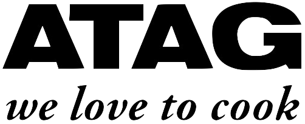
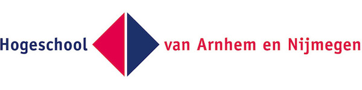
Korte introductie inhoud project
Hieronder zal eerst een korte introductie worden gegeven van de inhoud van het uitgevoerde project.
Het project bij ATAG Benelux is uitgevoerd door Diquan Brugman, Bram Eppingbroek en Coen Goossens.
Wij zijn drie studenten, die allen de opleiding Technische Bedrijfskunde genieten, maar verschillende achtergronden en disciplines kennen.
De tijdsduur voor het uitvoeren van het project bedroeg 14 weken. Met dit relatief korte tijdsbestek in ogenschouw genomen zijn wij erg trots op het bereikte resultaat.
Aanleiding onderzoek
ATAG is een vooraanstaand keukenleverancier en verkoopt aan Business to Business klanten.
Met klanten heeft ATAG de afspraak gemaakt om tien jaar na het einde van productie van een bepaald model nog serviceonderdelen uit te kunnen leveren.
Uit het gesprek met de opdrachtgever is gebleken dat zij momenteel zo’n 150.000 stuks voorraad hebben liggen in het magazijn in Duiven, onderverdeeld in 25.000 verschillende soorten.
Er is hierbij een selectie gemaakt tussen de producten die vaker kapot gaan en de producten die minder vaak kapot gaan, door middel van bestaande data.
Door deze selectie en de hoeveelheid ruimte die deze voorraad inneemt loopt ATAG regelmatig tegen een aantal problemen aan. Gekeken naar de manier waarop het huidige proces van de uitlevering en bevoorrading van serviceonderdelen in elkaar zit, werkt ATAG met een groot aantal toeleveranciers over heel de wereld die zorgen voor de toevoer van reserveonderdelen.
Dit zorgt ervoor dat het bedrijf tegen een aantal knelpunten aanloopt die zorgen voor hoge kosten en een aantal ontevredenheden die tevens veel tijd kosten.
De belangrijkste knelpunten die naar voren zijn gekomen uit interviews met diverse betrokkenen binnen ATAG Benelux, met het oog op de potentie van 3D-printen, zijn: hoge levertijden, beschikbaarheidsrisico, bestelhoeveelheden en duurzaamheid.
Gekeken naar een toekomstvisie kan 3D-printen met de huidige ontwikkelingen een oplossing bieden op de voorraad minimalisatie, klanttevredenheid, duurzaamheid en het verlagen van de integrale kosten.
Doelstelling en onderzoeksvraag
Het onderzoek kende de volgende doelstelling en onderzoeksvraag:
“Het doel van dit onderzoek is het uitvoeren van een haalbaarheidsonderzoek in opdracht van “ATAG Benelux” naar de potentie van 3D-printen om de voorraad van serviceonderdelen te minimaliseren.
Op basis van deze informatie zal advies worden gegeven over de te nemen stappen richting de realisatie van 3D-printen binnen “ATAG Benelux”.
Het onderzoek zal worden uitgevoerd in de periode van 21 oktober 2019 tot 16 januari 2020”.
“Wat zijn de mogelijkheden van het 3D-printen van serviceonderdelen en welke stappen moeten er genomen worden door ATAG Benelux om 3D-printen van onderdelen mogelijk te maken?”.
(Kern)voordelen voor ATAG Benelux
Samenvattend ontstaan voor ATAG Benelux bij implementatie van 3D-printen in hun primaire processen de volgende (kern)voordelen:
Minimalisering van de voorraad serviceonderdelen;
Verhogen van de klanttevredenheid;
Vergroten duurzaamheid;
Verlaging van de integrale kosten.
Vergroten mogelijkheden 3D-printen
ATAG Benelux kan op diverse manier de mogelijkheden van 3D-printen vergroten binnen de organisatie.
Het vergroten van de mogelijkheden wordt ook wel het vergroten van de toepasbaarheid genoemd, in dit geval van de technologie 3D-printen.
Uit de praktijk is gebleken dat een technologie, zoals 3D-printen, niet simpelweg geïmplementeerd kan worden binnen een organisatie.
Organisaties dienen veelal een eerste (kleine) stap te nemen richting de omarming van een dergelijke technologie, waarna door constante focus en draagvlak binnen de organisatie de toepasbaarheid en daarmee de mogelijkheden van de technologie worden vergroot.
ATAG Benelux kan de mogelijkheden en daarmee de toepasbaarheid van 3D-printen op de volgende wijze vergroten:
Gebruik maken van 3D-scantechnologie;
Ontwerpfase producten gericht op 3D-printen;
Afdeling Engineering actief ondersteunen;
Het uiteindelijke doel is om de technologie 3D-printen te gaan laten leven binnen de organisatie.
Alleen dan kan ATAG Benelux maximaal profiteren van de voordelen die deze technologie te bieden heeft.
Uit de praktijk is gebleken dat veel organisaties deze eerste (kleine) stap hebben genomen, waarna zij uitgegroeid zijn tot een Zelflerende Organisatie die de technologie volledig omarmd heeft.
Door middel van dit onderzoek heeft ATAG Benelux de eerste stap genomen richting de realisatie van 3D-printen binnen haar bedrijfsprocessen.
Uiteindelijk zal bij ATAG Benelux het verhogen van de mogelijkheden van 3D-printen indirect leiden tot het verlagen van de voorraad.
Vervolgstappen
Om de gegenereerde informatie in de context van ATAG te kunnen zetten is er een opzet ontwikkeld die zij kunnen gebruiken voor een verdere implementatie van 3D-printen.
Deze stappen zijn gebaseerd op gesprekken met de volgende partijen: Oceanz Ede, Geopoints Houten en K3D Terborg die nauw betrokken zijn bij bedrijven die deze zelfde stap als ATAG voor ogen hebben.
Dit in combinatie met de opgedane kennis vormt dit de opzet van het vervolg van de implementatie van 3D-printen.
Wanneer ATAG deze stappen zal volgen is verdere implementatie van de techniek in de primaire processen van de organisatie mogelijk.
Dit betreffen de volgende vervolgstappen:
Het maken van een investeringsbeslissing
Samenwerkingsverbanden oprichten
Introduceren 3D-printen binnen de organisatie
Productportfolio uitbreiden
Voor een gedetailleerde uitwerking van het bovenstaande én voor de conclusies/aanbevelingen aan ATAG Benelux, verwijs ik u graag door naar ons onderzoeksrapport.
Pitch dag bedrijven
Op 18 september 2019 vond de pitch dag plaats met de bedrijven uit het netwerk van de minor Smart Industry.
De pitch dag vond plaats in het Bisschop Hamerhuis te Nijmegen.
De bedrijven konden op deze dag de verschillende Smart Industry vraagstukken pitchen, die zij graag projectmatig op wilden gaan pakken.
Er werden deze dag circa 12 vraagstukken gepitcht, die in zekere mate nog waren aan te passen; te tunen naar onze specifieke leerdoelen.
Introductie en presentaties
De dag begon met een korte introductie, waarna direct de pitches van de verschillende bedrijven begonnen.
Zij hielden veelal een PowerPoint presentatie, waarmee zij ons over de verschillende vraagstukken informeerden.
Sommige opdrachtgevers gebruikten resultaten van vorige onderzoeken om een vervolgonderzoek toe te lichten.
Na de presentaties had ik een goed beeld van welke vraagstukken er allemaal beschikbaar waren én welke opdrachtgevers eventueel goed bij mij zouden passen.
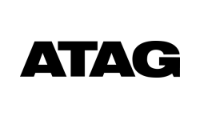
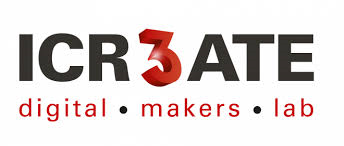
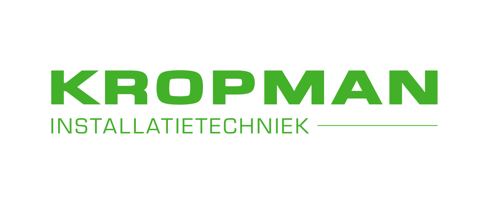
Kennismakingsessies
Na de presentaties volgde een kennismakingsessie met de bedrijven. De verschillende bedrijven namen een plek in de ruimte in, waarna we in groepsvorm bij deze bedrijven aanschoven.
Dit bood de mogelijkheid om extra informatie in te winnen over het vraagstuk én de verwachtingen van de opdrachtgever.
Voorafgaand aan deze dag werd vanuit de minor aangegeven dat het enorm belangrijk was dat het bedrijf en het bijbehorende vraagstuk goed paste in ons interessegebied en ambitie.
Hier heb ik dan ook goed rekening mee gehouden tijdens het filteren van de vraagstukken.
Na de kennismakingssessie was de opdracht om voor enkele bedrijven, die ons interessant leken, alvast een oplossingsrichting of PvA te generen.
Dit werd gedaan om hen te overtuigen dat wij een geschikt team waren voor de betreffende opdracht. Ik werkte samen met Bram Eppingbroek en Diquan Brugman met wie ik later het definitieve projectteam heb gevormd.
ATAG Benelux en ICR3ATE
Wij richtten ons op ATAG Benelux én ICR3ATE voor het binnenhalen van de projectopdrachten.
De vraagstukken van deze twee bedrijven lag het meeste in ons interessegebied, onze ambitie én paste goed in de context van onze opleiding Technische Bedrijfskunde.
Dat laatste vonden wij ook erg belangrijk. Om deze bedrijven te overtuigen hebben wij presentatie gehouden met behulp van een Prezi.
Zie onderstaand een aantal afbeeldingen en een link naar deze Prezi:
We hebben er bewust voor gekozen om niet té veel informatie op te nemen in de slides, maar dit mondeling toe te lichten. Dit leek ons sterker overkomen.
We hebben tijdens de presentatie alles uit de kast gehaald om de twee organisaties te overtuigen dat wij het geschikte team waren voor hun vraagstuk.
Voorkeur t.a.v. teams
Na afloop van de presentaties konden de verschillende bedrijven hun voorkeur uitspreken t.a.v. de teams.
Er waren namelijk meerdere teams die één bedrijf erg interessant vonden.
Dit gebeurde niet openbaar, maar individueel met een begeleidende docent, waarna de dag formeel afgesloten werd.
Wij grepen hierna onze kans om direct de contactgegevens te vragen van de vertegenwoordigers van ATAG Benelux en ICR3ATE.
Wij gaven aan erg enthousiast te zijn over hun vraagstukken én dat het ons interessant leek om hier eens nader over in gesprek te gaan.
Dit was naar onze mening een goede zet, aangezien beide bedrijven hier erg positief tegenover stonden.
We hebben de contactgegevens ontvangen en beide partijen een hand gegeven.
Nog dezelfde dag hebben we besloten om verder te gaan met ATAG Benelux en ik heb Jan van Os de volgende dag gecontacteerd.
Ik heb aangegeven dat ons groepsverband nog niet definitief is, aangezien wij hiervoor nog een goedkeuring moesten krijgen, maar zodra er duidelijkheid was ik hem hiervan op de hoogte zou brengen.
Jan van Os gaf aan dat hij ons groepsverband goed vond passen bij de opdracht en hij hoopte dat deze definitief zou worden.
Competenties
Voorafgaand, tijdens en ook na afloop van de pitch dag heb ik mij ontwikkeld in meerdere competenties behorend bij de minor Smart Industry.
Ten eerste heb ik mij ontwikkeld in de volgende competentie: ”De student werkt actief aan zijn professionele ontwikkeling”.
Dit heb o.a. voorafgaand aan de pitch dag gedaan.
Ik heb mij namelijk goed voorbereid op de pitch dag door mij uitgebreid in te lezen over de verschillende bedrijven.
Hierdoor kwam ik goed beslagen ten eis én wist ik al veel achtergrond informatie van de bedrijven.
Dit hielp weer in het overtuigen van ATAG Benelux en ICR3ATE tijdens het binnenhalen van de opdrachten.
Hierdoor verliepen tevens de kennismakingsgesprekken met de bedrijven goed.
Verder heb ik mij tijdens de pitch dag ontwikkeld in de volgende competentie: ”De student communiceert op een effectieve wijze zijn bevindingen naar verschillende doelgroepen”
Dit heb ik voornamelijk gedaan tijdens de presentaties aan de verschillende opdrachtgevers.
Ik heb voorafgaand aan de presentaties goed nagedacht over mijn publiek én natuurlijk de twee opdrachtgevers die ik moest overtuigen.
Dit door de vertegenwoordigers van de bedrijven zo goed mogelijk te typeren en vervolgens hier mijn verhaal op te baseren.
Dit bleek effectief, aangezien beide opdrachtgevers erg enthousiast waren.
Als laatste heb ik mij ontwikkeld in deze competentie: ”De student draagt vanuit verschillende rollen bij aan het succes van een projectteam”
Dit heb ik gedaan door na afloop van de pitch dag gelijk door te pakken met ons projectteam én een beslissing te maken over de twee opdrachtgevers.
Zoals eerder aangegeven heb ik ATAG Benelux direct op de hoogte gebracht van onze beslissing, zodat wij de opdrachtgever niet zomaar konden mislopen.
Vervolgens ben ik constant in contact gebleven met ATAG Benelux om hen van nieuwste ontwikkelingen op de hoogte te kunnen brengen.
Studentendag ATAG Benelux + afspraak met opdrachtgever
Op donderdag 10 oktober 2019 stond de Studentendag gepland bij ATAG Benelux in Duiven.
Dit betreft een dag die door ATAG zelf is georganiseerd om studenten een kijkje te geven in de keuken bij het bedrijf.
Op dezelfde dag hadden een afspraak gepland met Jan van Os van ATAG t.b.v. ons project.
Deze afspraak vond aansluitend aan de Studentendag plaats. Ik zal hieronder een korte toelichting geven over de Studentendag én onze afspraak met Jan van Os.
Studentendag ATAG Benelux
De Studentendag begon om 9:30u en duurde tot ongeveer 14:00u.
Ik ben samen met mijn projectteam, bestaande uit Diquan Brugman en Bram Eppingbroek, naar deze dag toe geweest.
Wij hadden immers na afloop een afspraak gepland staan. Wij waren ruim op tijd aanwezig (+- 9:00u) en werden warm ontvangen bij ATAG.
We troffen hier ook direct Jan van Os en hij gaf aan dat hij uitkeek naar onze afspraak.
Zie onderstaand een aantal foto’s van de mooie ruimte waar we werden ontvangen. Dit was dezelfde ruimte waar de jaarlijkse huisshow van ATAG werd gehouden.
Rondleiding
Na de presentatie verlieten we de ruimte en kregen we in groepen een rondleiding door de gebouwen van ATAG Benelux.
Onze groep begon bij de showroom van de merken ETNA, Pelgrim, ASKO en ATAG.
Interessant om te zien vond ik de manier waarop de organisatie onderscheid maakt tussen de diverse merken.
De merken ETNA, Pelgrim en ATAG zijn respectievelijk gekoppeld aan een budget, praktisch en premium imago.
Dit was goed terug te zien in de verschillende showrooms.
Na het bezoek aan de showroom gingen we door naar het magazijn van ATAG Benelux.
Dit was een enorm groot magazijn waar dagelijks grote hoeveelheden producten binnenkomen.
We kregen hier een rondleiding van de teamleider van de afdeling, die ons de dagelijkse werkzaamheden toelichtte.
Vervolgens zijn we de straat overgestoken naar het engineeringsgebouw, waar we allereerst een heerlijke snack kregen van één van koks van ATAG.
Vervolgens hebben we een ronde gemaakt door het magazijn van de serviceonderdelen (waar ons onderzoek uitgevoerd ging worden).
Hier zat tevens de kwaliteitsdienst gevestigd die voor ons een presentatie verzorgde.
Hierna hebben we een ronde gemaakt langs de afdelingen Engineering en R&D.
Ook deze afdelingen hadden een mooie presentatie voor ons voorbereid. Vervolgens zijn we weer teruggegaan naar de ontvangstruimte.
Zie onderstaand een aantal foto's van de rondleiding:
Lunch
Bij terugkomst in de ontvangstruimte stond er een uitgebreide lunch klaar verzorgd door de koks van ATAG.
Er was hier de gelegenheid om bij te praten met de verschillende mensen die aanwezig waren bij deze dag.
Na de lunch werd de dag formeel afgesloten.
Afspraak met opdrachtgever
Aansluitend aan de Studentendag vond onze afspraak met Jan van Os van ATAG Benelux plaats.
De Studentendag kwam wat dat betreft erg gelegen, aangezien erg veel informatie hebben opgedaan over het bedrijf.
Uiteraard hadden wij ons vooraf goed voorbereid op dit gesprek door ons in te lezen over het bedrijf en alvast enkele belangrijke vragen op te stellen, die we vervolgens tijdens het gesprek konden vragen.
Doel en resultaat gesprek
Het doel van dit gesprek met Jan was om een beter beeld te krijgen van onze projectopdracht én om al enkele praktische zaken te bespreken.
Het leek mij passend om ons eerst even wat uitgebreider voor te stellen aan Jan, alvorens we gingen praten over de opdracht.
Vervolgens heeft Jan de projectopdracht uitgebreid toegelicht en we hebben de verwachtingen van ATAG m.b.t. deze opdracht boven water weten te krijgen.
Toen de opdracht en de bijbehorende verwachtingen helder waren, vond ik het belangrijk dat we tevens wat praktische zaken concreet kregen.
Dit waren zaken als de mate van aanwezigheid bij ATAG, startdatum project, beschikbare ruimtes, communicatiemiddelen maar ook betrokken personen binnen ATAG Benelux die wij al dan niet konden benaderen.
Jan kon over veel van deze zaken al uitsluitsel geven en dat maakte het erg duidelijk.
Het was een erg goed en prettig gesprek met Jan van Os.
Na de afspraak bij heb ik direct onze begeleidende docent, Mariëlle Seegers, op de hoogte gebracht van de uitkomst van het gesprek.
In mijn studieloopbaan heb ik geleerd dat érg belangrijk is om alle partijen die betrokken zijn bij een project voldoende op de hoogte te houden.
Competenties
Voorafgaand, tijdens én na afloop van de Studentendag en de afspraak met onze opdrachtgever heb ik mij ontwikkeld in meerdere competenties behorend bij de minor Smart Industry.
Ten eerste heb ik mij ontwikkeld in de volgende competentie: “De student werkt actief aan zijn professionele ontwikkeling”.
Dit heb ik o.a. gedaan door zowel de Studentendag als de afspraak met Jan goed voor te bereiden.
Zo waren wij al ruim op tijd aanwezig bij de Studentendag, aangezien wij wisten dat Jan hier ook aanwezig was.
Volgens Jan gaf dit direct al een goede indruk.
Verder heb ik goed opgelet bij de Studentendag, zodat ik hierover later een aantal belangrijke vragen kon stellen.
Deze dag bood mij tevens de mogelijkheid om alvast kennis te maken met enkele personen binnen ATAG Benelux.
Verder heb ik mij ontwikkeld in de volgende competentie: ”De student draagt vanuit verschillende rollen bij aan het succes van een projectteam”.
Dit heb ik met name gedaan door een duidelijk doel voor mijzelf op te stellen t.a.v. het gesprek met Jan van Os.
Ik wilde namelijk de verwachtingen van ATAG Benelux én enkele praktische randzaken concreet hebben na afloop van het gesprek.
Ik denk dat van grote invloed is geweest op het resultaat van ons project.
Tijdens mijn studieloopbaan heb ik namelijk geleerd dat het van groot belang is verwachtingen van opdrachtgever én opdrachtnemer duidelijk zijn bij aanvang van een project om hiermee misstanden/onduidelijkheden in een later stadium te voorkomen.
Als laatste heb ik mij ontwikkeld in deze competentie:”De student communiceert op effectieve wijze zijn bevindingen naar verschillende doelgroepen”.
Na afloop van het gesprek heb ik namelijk direct onze begeleider op de hoogte gebracht van de uitkomst van het gesprek bij ATAG Benelux.
Het op hoogte houden/ goed communiceren was tevens één van de dingen die ik gedurende het project wilde aanhouden ook naar mijn projectteam toe.
Opzet project
Hieronder zijn alle zaken met betrekking tot de opzet van het project te vinden.
Allereerst wordt de aanwezigheid bij ATAG Benelux besproken, waarna er wordt gekeken naar het doel van deze aanwezigheid, de dagindelingen en een koppeling naar enkele belangrijke bedrijfsbezoeken, die in een later stadium verder worden toegelicht.
Vervolgens worden de verschillende communicatiemiddelen en overlegstructuren binnen ATAG Benelux én ons projectteam toegelicht.
Als laatste wordt er, naar aanleiding van het bovenstaande, gerefereerd naar de ontwikkeling in de competenties.
Aanwezigheid bij ATAG Benelux
Tijdens een van de eerste gesprekken met onze opdrachtgever Jan van Os van ATAG hebben wij gevraagd wat voor hen een gebruikelijke mate van aanwezigheid is voor minor studenten.
Jan gaf aan dat één dag in de week voor hen gebruikelijk is om ons van goede begeleiding te kunnen voorzien.
Uit dit gesprek werd verder duidelijk dat meerdere dagen ook geen probleem is, maar dat er dan niet altijd begeleiding beschikbaar kon zijn.
Dit begrepen wij uiteraard volledig en ik heb direct een planning opgesteld met de bezoekdagen aan ATAG Benelux.
Volgens deze planning waren wij minimaal 1 dag per week bij ATAG en in de meeste gevallen 2 dagen.
De overige beschikbare dagen werkten wij afwisselend bij een van teamgenoten thuis.
Dit waren meestal de donderdagen en vrijdagen, mochten er vanuit de minor geen activiteiten gepland staan op deze dagen.
Zie hieronder enkele foto’s van het werken bij ATAG Benelux en bij een teamgenoot thuis:
Doel bezoekdagen
De dagen dat wij ATAG Benelux bezochten wilden wij zo nuttig mogelijk te besteden.
Zo probeerden we op deze dagen belangrijke afspraken met medewerkers van ATAG te plannen, zodat zij ons verder konden helpen met het onderzoek.
Verder maakten wij zoveel mogelijk gebruik van de faciliteiten die ATAG slechts in Duiven bood.
Zoals het gebruik van computers met bepaalde software en de 3D-printers.
Ofwel, alles wat wij thuis niet konden doen óf ervoor kon zorgen dat wij na het wekelijkse bezoek niet verder konden, probeerden wij op de bezoekdagen te regelen/af te ronden.
Daarnaast had ik persoonlijk nog een ander doel m.b.t. de bezoekdagen bij ATAG Benelux.
De bezoekdagen waren namelijk een mooie gelegenheid om het contact tussen ons en de medewerkers van ATAG te vergroten/verbeteren en daarmee meer draagvlak voor ons onderzoek te creëren.
Dit heb ik voornamelijk gedaan door wekelijks in de middagpauze aan te schuiven bij de medewerkers van ATAG.
Het bedrijf kent namelijk een gezamenlijk restaurant waar vrijwel iedereen om 12:00u een middagpauze houdt.
Ik schoof wekelijks bij een andere groep medewerkers aan, die vaak erg geïnteresseerd waren in ons onderzoek.
Veel van hen wilden graag participeren in het onderzoek én ons daarmee verder helpen, erg handig!
Zie onderstaand een aantal foto’s van het bedrijfsrestaurant van ATAG Benelux:
Dagindeling bezoekdagen
Zoals eerder aangegeven probeerden het optimale uit de bezoekdagen bij ATAG Benelux te halen.
Dit hebben we voornamelijk gedaan door een goede dagindeling te maken met een bijpassende planning.
De dagindeling was in de regel als volgt:
8:30u aankomst bij ATAG in Duiven
8:30-9:00u planning maken voor de dag
9:00-12:00u Bespreken stukken, verder werken aan verslag + afspraken etc.
12:00-13:00 begeleiding van Jan (regelen praktische zaken + afspraken plannen etc.)
13:00-16:00 verder werken aan verslag + weekplanning maken
16:00-16:30 dag afsluiten met Jan + weekplanning voorleggen
16:30-17:30 laatste zaken afronden.
Uiteraard kende niet iedere bezoekdag de bovenstaande indeling, maar over het algemeen probeerden we ’s morgens de afspraken met medewerkers etc. te plannen, zodat wij ’s middags verder konden werken aan het verslag en de vergaarde informatie konden verwerken.
Het maken van een dagplanning hebben we gedaan sinds de tweede bezoekdag bij ATAG Benelux en vervolgens structureel aangehouden.
We merkten dat dit ons enorm veel houvast gaf tijdens de bezoekdagen én dat we meer en betere resultaten boekten.
Verder bespraken we elke ochtend elkaars aangeleverde stukken.
We deelden namelijk iedere week het werk op en we vonden het belangrijk om betrokken te blijven bij elkaars stukken en deze van feedback te kunnen voorzien.
Het kostte over het algemeen wel wat tijd, maar heeft naar mijn mening zeker positief bijgedragen aan de kwaliteit van de stukken.
Soms kan een andere kijk op bepaalde stukken van grote waarde zijn.
Zie onderstaand een foto van een dergelijke planning en het bespreken van elkaars stukken:
Bedrijfsbezoeken
Aan ons project bij ATAG Benelux waren meerdere partners en bedrijven gekoppeld.
Dit zorgde ervoor dat er regelmatig afspraken bij hen of bij ATAG plaatsvonden om bepaalde zaken te bespreken.
Dit waren bijvoorbeeld bedrijfsbezoeken bij K3D in Terborg, Oceanz in Ede en Geopoints in Houten.
Deze afspraken probeerden wij zoveel mogelijk te plannen of dagen dat géén bezoekdag bij ATAG gepland stond.
Op deze manier voorkwamen wij dat dit ten koste ging van eventuele begeleiding van Jan van Os tijdens het project.
Er gold een uitzondering op het moment dat een partner graag ATAG Benelux in Duiven wilde bezoeken, dan plande wij dit bewust op onze bezoekdagen in.
In de regel gold dat op die momenten de meeste belanghebbenden vanuit ATAG beschikbaar waren.
Op de inhoud van deze belangrijke afspraken én de behaalde resultaten wordt in een later stadium ingegaan.
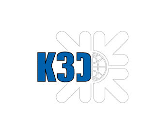
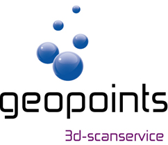
Communicatiemiddelen
Tijdens het project bij ATAG Benelux is gebruik gemaakt van diverse communicatiemiddelen en overlegstructuren.
Bij aanvang van het project stelde Jan van Os voor om Microsoft Teams te gaan gebruiken.
Dit leek ons een goed plan. Wij hadden alle drie nog geen ervaring met Microsoft Teams, maar we hadden er goede verhalen over gehoord.
Tijdens het project bleek het een erg handig en waardevol platform.
Jan had alle belanghebbenden binnen ATAG toegevoegd aan ons project in Teams.
Door middel van Teams hielden wij iedereen op de hoogte van de laatste stand van zaken m.b.t. ons project.
Verder gebruikten wij het platform om bestanden te uploaden, gesprekken te voeren, vragen te stellen en de planningen kenbaar te maken.
Zie onderstaand twee afbeeldingen van hoe wij Teams gebruikten:
Competenties
Na het beschrijven van de opzet van het project kan er gerefereerd naar de ontwikkeling in meerdere competenties behorend bij de minor.
Ik zal hieronder kort toelichten op welke er ontwikkeling heeft plaatsgevonden in de competenties.
Allereerst heeft er ontwikkeling plaatsgevonden in de volgende competentie: ”De student draagt vanuit verschillende rollen bij aan het succes van een projectteam”.
Dit heb ik onder andere gedaan door, op eigen initiatief, meerdere interessante partijen en personen te koppelen aan ons project.
Zo heb ik tijdens de lunchpauzes meerdere personen binnen ATAG enthousiast gemaakt voor ons project, die vervolgens een zeer waardevolle bijdrage hebben kunnen leveren.
Daarnaast heb ik partijen als Oceanz en K3D aangedragen, die vervolgens voor ons prototypes 3D-geprint hebben.
Naar mijn mening hebben o.a. deze zaken bijgedragen aan het succes van het gehele projectteam.
Verder heb ik mij ontwikkeld in de volgende competentie: ”De student communiceert op een effectieve wijze zijn bevindingen naar verschillende doelgroepen”.
Dit heb ik gedaan door constant álle partijen en belanghebbenden die bij dit project aangesloten zijn op de hoogte te houden via het meest effectieve communicatiemiddel.
Zo heb ik regelmatig updates geplaatst op Teams of onze begeleidende docent vanuit de minor op de hoogte gebracht van de laatste ontwikkelingen.
Verder kan ik concluderen dat ik dit op een effectieve wijze heb gedaan, aangezien er weinig/tot geen onduidelijkheden tijdens het project zijn geweest én ik meerdere keren een compliment van partners heb gekregen over mijn manier van communiceren.
Verder heb ik mij ook ontwikkeld in deze competentie: ”De student draagt actief bij aan een optimale werksfeer binnen en buiten zijn team én ontwikkelt een professioneel netwerk”.
Ik heb actief gewerkt aan een optimale werksfeer binnen ons team door bij het bespreken van elkaars stukken te fungeren als een soort “voorzitter”. Kritiek/advies op elkaars stukken kan niet áltijd als prettig ervaren worden.
Ik heb tijdens mijn opleiding geleerd hoe je het beste dit soort sessies kan opzetten en ik heb mijn projectteam aangegeven deze taak graag op mij te nemen.
De sessies verliepen in alle gevallen goed en de feedback werd als prettig ervaren door de teamgenoten.
Daarnaast heb ik ook actief gewerkt aan mijn professionele netwerk.
Dit door meerdere interessante personen via LinkedIn te benaderen en om hulp te vragen, hierop zijn een aantal zeer leuke reacties gekomen.
Als laatste heb ik mij ontwikkeld in de volgende competentie: ”De student werkt actief aan zijn professionele ontwikkeling”.Naar aanleiding van het bovenstaande durf ik wel te zeggen dat ik mij op een professionele wijze heb ontwikkeld.
Dit soort samenwerkingsverbanden op te zetten met meerdere interessante partijen en personen.
Verder door altijd representatief te zijn voor ATAG Benelux bij gesprekken met deze partners en personen.
Ik heb er altijd voor gezorgd dat ik kennis van zaken heb en dit ook uitstraal.
Pitstop 1 + kookworkshop
Op 24 oktober 2019 stond de eerste Pitstop van het project op de planning met aansluitend een kookworkshop bij Het Kook College in Wijchen.
In dezelfde week vond de start van de verschillende projecten bij de opdrachtgevers plaats.
Het doel van deze pitstop was dan ook om elkaar van (praktische) tips en feedback te voorzien, zodat ieder projectteam een goede start kon maken.
Het doel van de kookworkshop was voornamelijk om de samenwerking tussen elkaar en de verschillende groepen te bevorderen om ook hiermee het succes van de projectteams te vergroten.
Pitstop
Tijdens de pitstop deelde ieder projectteam de inhoud, het onderwerp, de adviesvraag en de voortgang met betrekking tot het project.
De meeste groepen maakten gebruikt van een PowerPoint presentatie om deze informatie met de groep te delen.
Tussendoor werden vragen gesteld aan de verschillende teams én er werden waardevolle adviezen gegeven.
Vaak geeft een andere kijk op een probleem of aanpak net even wat meer inspiratie en nieuwe inzichten.
Ook wij gaven een presentatie over ons project bij ATAG Benelux.
We hadden reeds een PvA aangeleverd en deze was dan ook deels verwerkt in de presentatie.
Zie onderstaand een aantal afbeeldingen van deze presentatie én een link naar de gehele PowerPoint presentatie.
Tips en adviezen
Na onze presentatie kregen wij veel adviezen en tips vanuit de groep en docenten.
Hier hebben wij enorm veel aan gehad tijdens ons project.
Mijn doel van deze dag was ook om zoveel mogelijk adviezen in te winnen, zodat wij hier tijdens ons project profijt van zouden hebben.
Zo kregen wij het advies om op te passen dat wij niet té veel gingen onderzoeken bij ATAG Benelux.
Wij hadden namelijk een groot aantal deelvragen en subdeelvragen opgesteld en 3D-printen is een erg breed onderwerp.
Het risico bestond dat wij door tijdsgebrek het project dan niet afkregen óf dat wij inhoudelijk geen diepgaand onderzoek konden uitvoeren.
Hier waren wij ons als enigszins van bewust, maar het feit dat dit direct als advies werd meegegeven heeft ons aan het denken gezet.
Na afloop van deze dag hebben wij direct de deelvragen ingekort én per deelvraag een goede afbakening gemaakt over wat wel én wat niet onderzocht ging worden.
Dit heeft ervoor gezorgd dat wij ons project binnen de voorgeschreven tijd hebben kunnen afronden en dat wij een inhoudelijk sterk en goed onderzoek hebben kunnen opleveren.
*Naar mijn mening heeft deze pitstop in zéér grote mate bijgedragen aan het succes van ons project bij ATAG Benelux*
Zie hieronder nog enkele foto's van de presentaties tijdens de pitstop:
Kookworkshop
Aansluitend aan de pitstop vond, onder leiding van Marcel Weber, de kookworkshop plaats.
Zoals eerder aangegeven ging het hier niet zozeer om het koken, maar om het bevorderen van de samenwerking binnen én buiten de projectteams.
Persoonlijk was ik erg benieuwd naar deze workshop.
Ik ben namelijk zelf niet zo van het koken, maar ik geloofde wel dat deze (informele) workshop van grote waarde kon zijn voor het verbeteren van de samenwerking.
Introductie
Bij aanvang van de kookworkshop kregen we allereerst een introductie over Het Kookcollege en een uitleg over wat deze dag de bedoeling was.
Marcel Weber gaf aan dat ieder groepje een doos met ingrediënten kreeg waarmee het mogelijk was om meerdere verschillende gerechten te maken.
Afwisselend van simpele tot complexe en culinaire gerechten.
Het doel was om ‘Out-of-the-box te denken en daarmee een mooi en culinair gerecht op tafel te zetten voor de gehele groep.
Voorderest waren wij volledig vrij m.b.t. de keuze voor een bepaald gerecht.
Nadat Marcel het startsignaal had gegeven kon iedereen een doos pakken en aan de slag gaan.
In de dozen zaten de meest uiteenlopende ingrediënten en veel groepjes maakten gebruik van kookboeken voor inspiratie.
Zie hieronder enkele foto’s:
Koken
Nadat ieder groepje een keuze had gemaakt m.b.t. de gerechten kon het koken beginnen.
Aangezien we moesten koken voor een grote groep mensen was een goede taakverdeling binnen het team van groot belang.
Binnen mijn team (waar tevens mijn projectgenoten in zaten) begonnen wij met het bepalen van een goede taakverdeling.
Zo was ik verantwoordelijk voor het bereiden van het vlees, een ander voor het maken van de soep en weer een ander voor bereiden van de groenten.
Tussendoor vroegen we regelmatig hulp aan Marcel Weber of een andere begeleider van Het Kookcollege.
Ook hebben we inspiratie opgedaan van andere groepen én hebben zij ons geholpen op momenten dat dit nodig was.
Uiteraard was dit andersom ook het geval. Zo was ik verantwoordelijk voor het vlees, maar op het moment dat deze in de oven zat kon ik mij ergens anders mee bezighouden.
Ik hielp dan mijn eigen team óf andere teams. Zie hieronder enkele foto’s van het kookproces:
Opdienen en eten
Na het koken moest iedere groep zijn gerecht opdienen en werd het met de gehele groep opgegeten.
Hiervoor moesten de gerechten mooi opgediend worden.
Aangezien iedere groep een verschillend gerecht had, namelijk een voorgerecht, hoofdgerecht of nagerecht werd er een tijdsplanning opgesteld.
Iedere groep moest op een bepaalde tijd zijn gerecht klaar hebben om het te kunnen uitserveren.
Met name het zorgvuldig opdienen en het binnen de tijd klaar hebben van het gerecht was een grote uitdaging voor de meeste groepen.
Nadat het gerecht opgediend was werd kort toegelicht wat voor soort gerecht het betrof.
Zie hieronder enkele foto’s van het opdienen/opeten van de verschillende gerechten en de tijdsplanning:
Reflectie op kookworkshop
Ter afronding hielden wij gezamenlijk een reflectie op de kookworkshop.
Vanaf dit moment werd pas weer over het aspect samenwerking gesproken, dit vond ik wel grappig aangezien de gehele workshop om samenwerking draaide.
Onbewust waren wij er namelijk constant mee bezig. Ik heb dan ook enorm veel geleerd van deze workshop.
Het klinkt een beetje cliché maar ik had vooraf niet verwacht dat wij zulke mooie gerechten op tafel konden zetten met de groep.
Hieruit blijkt maar weer waar je met meerdere verschillende mensen toe in staat bent, erg leuk.
Ik denk deze kookworkshop de groep zeker dichter bij elkaar heeft kunnen brengen en dit bevorderlijk is geweest voor de samenwerking tijdens de projecten.
Wellicht dat ik een soortgelijke activiteit is kan aandragen bij mijn huidige werkgever.
Competenties
Met behulp van de pitstop en de inspirerende kookworkshop in Wijchen heb ik mij ontwikkeld in meerdere competenties behorend bij deze minor.
Ik zal hieronder kort de belangrijkste ontwikkelingen aandragen.
Ten eerste heb ik mij ontwikkeld in de volgende competentie: ”De student werkt actief aan zijn professionele ontwikkeling”.
Dit heb ik gedaan door t.a.v. de pitstop een duidelijk doel voor mij én mijn projectteam op te stellen, namelijk het verkrijgen van zoveel mogelijk waardevolle adviezen en tips.
Dit doel heb ik verwezenlijkt door zelf veel adviezen en tips te geven én deze ook bij anderen voor ons project los te krijgen.
Dit heeft geleid tot een goed resultaat en daarmee een succesvol project bij ATAG Benelux.
Verder heb ik mij tijdens de kookworkshop op een professionele wijze ontwikkeld.
Door Marcel Weber om advies te vragen over bepaalde gerechten, maar ook over zaken als taakverdeling om hiermee een betere samenwerking te creëren.
Na afloop heb ik alle betrokkenen bedankt en een hand gegeven; Marcel deelde op zijn beurt zijn contactgegevens uit en wellicht kunnen wij in de toekomst nog iets voor elkaar betekenen.
Verder heb ik mij ontwikkeld in de volgende competentie: ”De student communiceert op een effectieve wijze zijn bevindingen naar verschillende doelgroepen”.
Dit heb ik gedaan door bij de pitstop de presentatie te verzorgen voor ons projectteam.
Ik heb voorafgaand goed nagedacht over het publiek aan wie ik deze presentatie ging geven en wat ik er precies mee wilde bereiken.
Over het algemeen kun je een presentatie goed sturen als je het doel van de presentatie helder voor ogen hebt.
Dit gebeurde naar mijn mening ook, want wij kregen veel waardevolle adviezen en tips van de aanwezigen.
Als laatste heb ik mij ontwikkeld in deze competentie: ”De student draagt vanuit verschillende rollen bij aan het succes van een projectteam”.
Naar mijn mening heeft de ontwikkeling in de voorgaande competenties ook deels bijgedragen aan de ontwikkeling in deze competentie.
Aangezien wij door een effectieve wijze van communiceren tijdens de pitstop veel waardevolle adviezen en tips hebben gekregen, die vervolgens weer in grote mate hebben bijgedragen aan het succes van ons project.
Verder heb ik door mij op een professionele wijze te ontwikkelen veel geleerd over samenwerken en hoe je dit kunt bevorderen in groepsverband.
Ik denk dat ik ook hier veel profijt van heb gehad, want de samenwerking binnen ons projectteam verliep erg goed.
Belangrijke partners + resultaten
Hieronder wordt kort toegelicht wat de belangrijkste partners waren tijdens ons project bij ATAG Benelux én welke resultaten hieruit voortgevloeid zijn.
Er wordt met name ingegaan op een aantal belangrijke afspraken/bedrijfsbezoeken die met deze partners hebben plaatsgevonden.
Uiteindelijk zijn deze partners ook aangedragen aan ATAG Benelux om verdere samenwerking mee op te zetten.
Ter informatie, binnen de wereld van 3D-printen bestaan een aantal “clusters” van partijen die met elkaar samenwerken, deze partijen hebben hun processen volledig op elkaar afgestemd.
Het is dus gebruikelijk om met één van deze clusters in zee te gaan.
K3D in Terborg
Bij aanvang van ons project bij ATAG Benelux hadden wij vrijwel direct een afspraak staan bij K3D in Terborg.
K3D is 100% eigendom van de KAAK Group en deze groep is actief in de bakkerij-industrie. Zij produceren, installeren en onderhouden productielijnen voor industriële bakkerijen.
De KAAK Group heeft K3D B.V. opgericht als kennisinstituut voor metaal 3D-printen.
K3D heeft de laatste jaren enorm veel ervaring opgedaan in het 3D-printen van metaal en beschikte als eerste in Nederland over een industriële metaal 3D-printer die seriematig producten kan produceren.
Zie onderstaand enkele bedrijfsinformatie over K3D in Terborg:
Doel afspraak K3D
Het bezoek aan K3D in Terborg vond plaats op maandag 4 november 2019.
Vanuit ATAG Benelux waren we met een grote club mensen, namelijk 8 mensen in totaal.
Vanuit K3D waren er 3 mensen en er waren nog een aantal andere partijen aanwezig, die ons de ontwikkeling m.b.t. Digital Parts Transferring wilde toelichten.
Ook was er, naar mijn mening, een zeer inspirerend persoon aanwezig deze dag, namelijk Ko Buijs.
Ko Buijs is metallurgisch Engineer en heeft +-300 publicaties op zijn naam staan op het gebied van 3D-printen van metaal.
Kortom, een mooie club mensen met wie samenwerking/kennisdeling op gebied van 3D-printen mogelijk was.
Zoals eerder aangegeven vond deze afspraak plaats bij aanvang van ons project bij ATAG Benelux en wij hadden vanwege deze reden het volgende doel met deze afspraak:
“Het vergroten van onze algemene kennis op het gebied van metaal 3D-printen én op het gebied van Digital Parts Transferring.
Daarnaast wilden wij graag ons professionele netwerk gaan uitbreiden met deze partners om hier later in ons project mogelijk profijt van te kunnen hebben.
Als laatste kon door deze afspraak een beeld geschept worden of K3D een mogelijk interessante partner voor ATAG Benelux kon worden”.
Zie hieronder, voor uw beeldvorming, een video over het principe van Digital Parts Transferring (DPT):
Presentaties + rondleiding
Allereerst werden een aantal presentaties gegeven door de verschillende partijen die aanwezig waren.
Met name de presentatie van K3D zelf was erg indrukwekkend.
Ik wist vooraf niet dat de Huidige Stand Der Techniek m.b.t. 3D-printen van metaal al zo ver gevorderd was.
Erg mooi om te zien was hoe K3D producten herontwerpt om ze zo geschikt te maken voor 3D-printen.
Verder waren ze zeer openhartig over prijsopbouw, mogelijkheden tot samenwerking etc.
Vervolgens kregen wij een rondleiding bij K3D en werden er een groot aantal producten getoond, die 3D-geprint waren.
Verder kregen we tijdens de rondleiding uitleg over de 3D-printer en de manier waarop deze zijn werk doet.
De rondleiding maakte bij mij erg veel duidelijk.
De dag werd vervolgens afgesloten met een erg informatieve presentatie van Ko Buijs, die ons volledig meenam in de wereld van 3D-printen met de verschillende technieken en mogelijkheden.
Deze presentatie heeft onze kennis op het gebied van 3D-printen enorm vergroot.
Resultaat
Het bezoek aan K3D heeft tot mooie resultaten geleid.
Zo hebben wij allemaal onze kennis op het gebied van 3D-printen enorm vergroot.
Dit bood ons een goede houvast tijdens ons gehele project.
Verder hebben wij ons professionele netwerk uitgebreid met deze partijen en zijn zij tijdens ons project enorm hulpvaardig gebleken.
Voor extra informatie over bepaalde onderwerpen hebben wij regelmatig contact gehad.
Daarnaast hebben de verschillende partijen ons project én ATAG Benelux kenbaar gemaakt binnen hun “cluster”, waardoor er direct meerdere bezoeken en afspraken volgden.
Zo werden wij door Ko Buijs getipt over Geopoints in Houten, die uiteindelijk een groot aantal 3D-scans voor ons heeft gemaakt.
Kortom, een erg interessant en waardevol bezoek aan K3D, dat uiteindelijk tot een groot aantal bezoeken heeft geleid.
Zie hieronder twee afbeeldingen van wetenschappelijke artikelen, die wij gekregen hebben van Ko Buijs ter versterking van ons onderzoek:
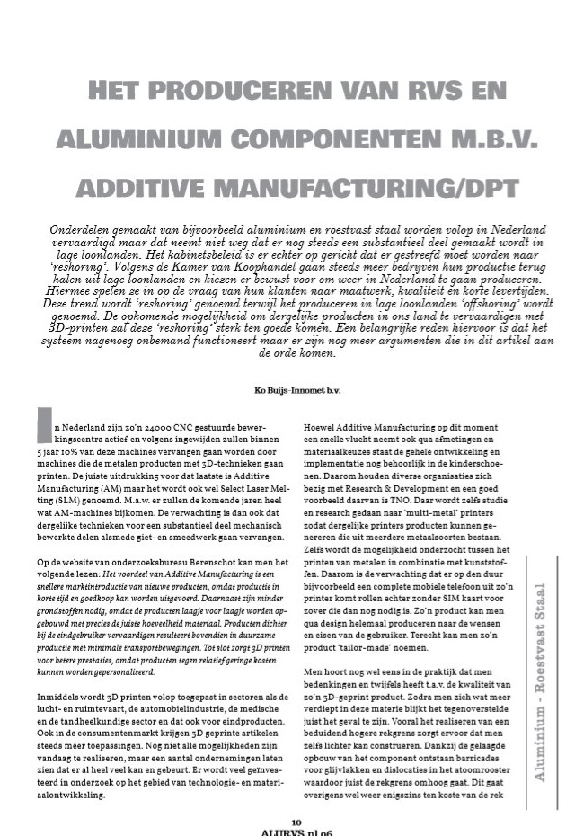
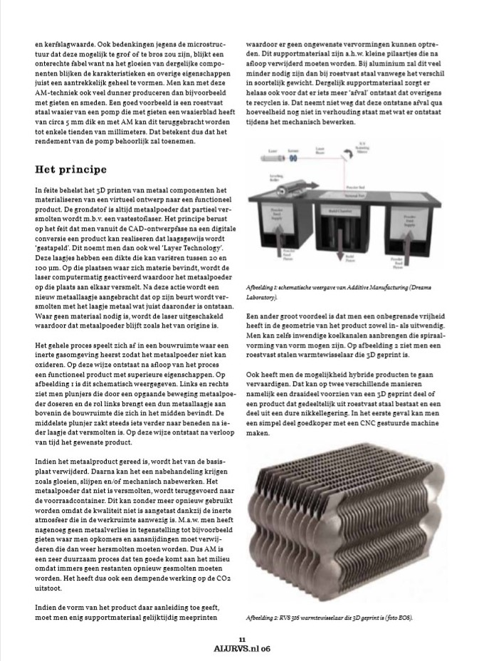
Geopoints 3D-scanservice in Houten
Een andere belangrijke partner tijdens ons project bij ATAG Benelux was Geopoints 3D-scanservice in Houten.
Tijdens het bezoek aan K3D werden wij getipt over Geopoints en wij hebben later in het project contact opgenomen met de eigenaar; Nico Velzel.
Wij hebben hem een korte toelichting gegeven over ons project én wat Geopoints voor ATAG Benelux zou kunnen betekenen.
Nico was direct erg enthousiast en nodigde ons uit voor een gesprek in Houten.
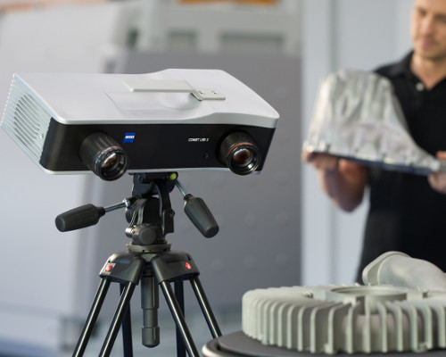
Doel afspraak met Geopoints
Onze eerste afspraak bij Geopoints vond plaats op 3 december 2019.
We waren op dat moment al in een redelijk ver stadium van ons project en kwamen tot de conclusie dat er van een hoop onderdelen van ATAG Benelux geen CAD-tekeningen beschikbaar waren.
Geopoints biedt verschillende Scan services aan, waaronder reverse-engineering.
Ofwel het inscannen van een fysiek onderdeel om deze vervolgens te kunnen omzetten naar een CAD-tekening.
Deze file kan vervolgens gereed worden gemaakt om te kunnen 3D-printen.
Voor ATAG Benelux zou een degelijke partner zeer interessant kunnen zijn.
Wij en ATAG Benelux waren zeer benieuwd naar hoe dit proces in zijn werk ging én welke kwaliteit behaald kon worden.
Voor de beeldvorming voor ons en ATAG Benelux kon een prototype, dat eerst gescand is en vervolgens 3D-geprint, doorslaggevend zijn om in te stappen in de wereld van 3D-printen.
Het doel van deze afspraak met Geopoints was dus als volgt:
“Het inwinnen van informatie m.b.t 3D-scanning én het (kosteloos) verkrijgen van enkele CAD-tekeningen van fysieke serviceonderdelen van ATAG Benelux.
Met deze tekeningen kunnen wij vervolgens de organisatie overtuigen én Geopoints aandragen als geschikte partner voor ATAG Benelux”.
Gesprek en rondleiding
Het was een erg prettig gesprek met Nico Velzel van Geopoints.
Hij lichtte het ontstaan van Geopoints toe en hoe het zich de afgelopen jaren had ontwikkeld.
Verder hebben wij uiteraard uitleg gegeven over ons onderzoek en het probleem betreffende het ontbreken van CAD-tekeningen bij ATAG Benelux.
Nico gaf aan samenwerkingen te hebben met meerdere gelijksoortige bedrijven als ATAG Benelux, die met dezelfde problemen kampen.
Dit vonden wij erg interessant en we gaven aan graag een aantal CAD-tekeningen te verkrijgen van enkele serviceonderdelen.
Nico Velzel gaf aan hier graag aan te willen meewerken en dat hij kosteloos voor ons een aantal onderdelen wilde inscannen.
Wij waren erg met de goede uitkomst van het gesprek bij Geopoints.
Met behulp van de CAD-tekeningen konden wij namelijk enkele producten laten 3D-printen bij een andere partner.
Nico Velzel gaf nog meerdere keren aan dat hij het een prettig gesprek met ons vond én uitkeek naar een toekomstige samenwerking met ATAG Benelux.
Destijds hebben wij gelijk Jan van Os op de hoogte gebracht van de uitkomst en hij vond het een goede prestatie van ons.
Hierna hebben nog een aantal afspraken plaatsgevonden bij zowel Geopoints als ATAG Benelux.
Zie hieronder het resultaat van een 3D-gescand serviceonderdeel door Geopoints:
Oceanz in Ede
De laatste belangrijke partner voor ATAG Benelux is Oceanz in Ede. Tijdens ons project hebben wij meerdere afspraken gehad met Frank Elbersen (salesmanager van Oceanz).
Oceanz is een 3D-printservice en marktleider op het gebied van 3D-printen van kunststoffen.
Oceanz werkt veel samen met K3D in Terborg en Geopoints in Houten.
Ik heb Frank Elbersen op de hoogte gebracht van ons project binnen ATAG Benelux én ook hij was direct enorm enthousiast.
Hij gaf aan dat hij samen met Nico Velzel momenteel een gelijkwaardig project aan het opstarten was.
Frank Elbersen maakte graag een afspraak met ons, Jan van Os en een engineer van ATAG.
Doel afspraak Oceanz
Onze eerste afspraak met Oceanz vond plaats bij ATAG in Duiven op woensdag 11 december 2019.
Ook deze afspraak vond plaats in een relatief laat stadium in ons project bij ATAG Benelux en dit was erg gunstig.
Op dat moment waren wij namelijk opzoek naar geschikte partners voor ATAG om hun serviceonderdelen te laten printen.
Het uitgangspunt was namelijk dat ATAG het printen zal gaan uitbesteden naar een partner, met wie een lange termijn samenwerking werd opgesteld.
Oceanz faciliteert namelijk ook in re-engineering van onderdelen om ze zo geschikt te maken voor 3D-printen.
Oceanz was in onze ogen dan ook meer dan een simpele 3D-scanservice, maar een bedrijf dat helpt om de klant te ontwikkelen in de wereld van 3D-printen. Het doel van deze afspraak met Oceanz was als volgt:
“Verder kennismaken met Oceanz als potentiele partner voor ATAG Benelux t.a.v. het uitbesteden van printjobs en het (kosteloos) laten SLS printen van een aantal prototypen, waarvan wij reeds de tekeningen van Geopoints hebben ontvangen”.
Gesprek bij ATAG Benelux
Het gesprek met Frank Elbersen van Oceanz bij ATAG Benelux verliep erg goed.
Frank had een groot aantal voorbeelden meegenomen om ons te inspireren over wat er kunststof gebied allemaal mogelijk was om te 3D-printen.
De conclusie was dat in principe alles mogelijk is om te 3D-printen, maar dat het van de toepassing van het betreffende product afhangt of het ook daadwerkelijk interessant is.
Tijdens het gesprek heb ik aan Frank gevraagd of het mogelijk was om een aantal producten te laten printen bij Oceanz om hiermee enkele testen uit te voeren.
Frank stond hier zeer positief tegenover en gaf aan dat er veel mogelijk was.
Zodra wij de CAD-bestanden van Geopoints hadden ontvangen konden wij deze doorzetten naar hem om te laten printen.
Ook deze afspraak met Oceanz kende een goede uitkomst. Oceanz ging namelijk aan de slag met het printen van onze serviceonderdelen als prototypen.
Ook Oceanz wilde graag partner worden van ATAG Benelux mochten zij willen instappen in de wereld van 3D-printen.
Ter afsluiting gaf Frank Elbersen mij nog een compliment over de manier van communiceren naar hen toe.
Hij gaf aan ons graag op korte termijn bij Oceanz in Houten te ontvangen.
Zie onderstaand een aantal afbeeldingen van prototypen die wij bij Oceanz hebben laten printen:
Naast de bedrijfsbezoeken aan partners van ATAG Benelux hebben wij nog regelmatig Open Avonden en conferenties bezocht omtrent 3D-printen, hier hebben wij erg veel van opgestoken en deze kennis hebben wij vervolgens weer verwerkt in ons eigen onderzoek bij ATAG Benelux.
Competenties
Met behulp van de verschillende bedrijfsbezoeken en het aangaan van samenwerkingsverbanden met partners heb ik mij ontwikkeld in meerdere competenties behorend bij deze minor.
Ik zal hieronder kort de belangrijkste ontwikkelingen toelichten.
Ten eerste heb ik mij ontwikkeld in de volgende twee competenties: “De student ontwerpt bedrijfsprocessen volgens Smart Industry criteria”. en in ”De student ontwikkelt een prototype van de oplossings(richting)”.
Met behulp van de partners Geopoints en Oceanz heb ik namelijk nieuwe bedrijfsprocessen ontwikkeld.
Met deze partners heb ik geschetst hoe wij het meest efficiënt en gemakkelijk de CAD-bestanden kunnen delen, de prototypes kunnen laten printen en vervolgens het transport kunnen uitvoeren.
Verder heeft Geopoints de onderdelen gescand én heeft Oceanz ze vervolgens 3D-geprint, zodat wij deze prototypes kunnen delen op het seminar aan onze medestudenten/opdrachtgevers.
Verder heb ik mij ontwikkeld in de volgende competentie: ”De student communiceert op effectieve wijze zijn bevindingen naar verschillende doelgroepen”.
Ik heb constant het initiatief genomen om de verschillende partners te benaderen, zodat zij ons verder konden helpen met het onderzoek bij ATAG Benelux.
Ik heb altijd goed de doelgroep in acht genomen bij de communicatie naar hen toe.
Verder heb ik regelmatig complimenten ontvangen over mijn nette en duidelijke manier van communiceren, waaruit valt op te merken dat deze op een effectieve wijze is verlopen.
Vanwege deze reden kan ik constateren dat ik mij ook ontwikkeld heb in deze competentie: ”De student draagt vanuit verschillende rollen bij aan het succes van een projectteam”.
Frank Elbersen van Oceanz gaf bijvoorbeeld aan dat hij de helft van zijn e-mail direct weg kon gooien, maar dat die van mij opviel en hij graag meer wilde weten over ons project bij ATAG Benelux.
Ook heb ik ontwikkeld in deze competentie: ”De student draagt actief bij aan een optimale werksfeer binnen en buiten zijn team én ontwikkelt een professioneel netwerk”.
Tijdens bedrijfsbezoeken werden vaak andere namen genoemd van interessante partijen. Ik heb op dergelijke momenten gevraagd naar contactgegevens van deze partijen, zodat ik hen gemakkelijk kon benaderen.
In de praktijk merkte ik dat dit een goede manier van contacteren betrof, aangezien de partners elkaar allemaal kennen.
Op deze manier heb ik gewerkt aan mijn professionele netwerk.
Als laatste heb ik gewerkt aan deze competentie: ”De student werkt actief aan zijn professionele ontwikkeling”.
Dit heb ik gedaan door bedrijfsbezoeken/afspraken altijd erg goed voor te bereiden.
Zo lees ik mij altijd goed in over het bedrijf, de verschillende technologieën die zij gebruiken etc.
Verder stel ik altijd een doel dat ik met een bepaalde afspraak wil bereiken, zodat ik altijd het optimale uit een dergelijke afspraak kan halen.
Diverse intervisies tijdens minor periode
Gedurende de minor periode stonden er diverse intervisie momenten ingepland.
Dit waren afwisselend momenten om bijvoorbeeld de voortgang van de projecten/portfolio’s te bespreken of om de ontwikkeling op de competenties van de minor nader te bekijken.
Een groot aantal van deze intervisies zijn gecanceld vanwege het feit dat zij niet altijd even relevant waren.
Anderen werden gebruikt om aan het persoonlijk portfolio te werken.
Dit zorgde overigens niet voor belemmeringen, aangezien bij vragen iedereen terecht kon bij zijn/haar projectbegeleider terecht óf een beroep doen op het forum van bkmoodle.
Intervisie
Op 15 november 2019 stond, aansluitend op de workshop van Paul Kalis, ook een intervisie moment gepland.
Deze intervisie werd gehouden door onze (project)begeleidster Mariëlle Seegers.
Ik vond een zeer nuttige en informatieve intervisie.
Er werd tijdens deze intervisie o.a. praktische informatie gegeven over het portfolio.
Verder werden er tips gegeven hoe er aan bepaalde competenties gewerkt kon worden.
Naar mijn mening nam deze informatie veel onduidelijkheid weg, dit merkte ik ook aan mijn medestudenten.
Mariëlle gebruikte een duidelijke PowerPoint presentatie, die naderhand nog even rustig doorgenomen kon worden.
Zie hieronder enkele foto’s van deze PowerPoint presentatie:
Een tweetal intervisie momenten heb ik helaas niet bij kunnen wonen.
Hier heb ik de verschillende begeleiders uitvoerig van op de hoogte gesteld.
Zij gaven aan dat dit geen probleem was, mits de vervangende activiteit werd vermeld in het portfolio.
Een intervisie moment stond gepland tijdens een AutoCAD training die ik heb gevolgd; meer informatie over deze training is te vinden bij thema Smart Technology in week 8.
Verder heb ik een intervisie moment gemist door een afspraak bij Geopoints in Houten.
Meer informatie over deze afspraak is te vinden bij het kopje “belangrijke partners + resultaten op de project webpagina.
Referentie naar belangrijkste competenties
Hieronder wordt voor de laatste keer gerefereerd naar de ontwikkeling in enkele belangrijke competenties behorend bij de minor.
Tijdens het project is actief aan deze competenties gewerkt. De overige competenties zijn per item op deze webpagina beschreven en te vinden bij de verschillende thema's van de minor.
Competenties
De belangrijkste competentie waarin verregaande ontwikkeling heeft plaatsgevonden door middel van het project bij ATAG Benelux is de volgende competentie: ”De student is in staat om een praktijkcasus naar een onderzoeksplan te vertalen, deze uit te voeren en de kwaliteit van de uitvoering te evalueren”.
Dit is goed waarneembaar in ons onderzoeksrapport met bijbehorende PvA.
Allereerst hebben wij diverse gesprekken gevoerd met Jan van Os van ATAG Benelux om de praktijkcasus goed inzichtelijk te krijgen.
Deze praktijkcasus hebben wij vervolgens omgezet naar een onderzoeksplan door middel van een Plan van Aanpak (PvA).
In dit PvA zijn een probleemstelling, theoretisch kader, doelstelling & centrale vraagstelling en een afbakening met randvoorwaarden opgenomen.
Op dit PvA hebben wij vervolgens vanuit de minor én vanuit de opdrachtgever een goedkeuring gekregen, waarna het onderzoek heeft plaatsgevonden.
Voor het onderzoek verwijs ik u graag door naar ons onderzoeksrapport, waarin tevens is af te leiden dat er verregaande ontwikkeling in deze competentie heeft plaatsgevonden.
De kwaliteit van de uitvoering is in zowel het onderzoeksrapport als ook tijdens de verschillende eindpresentaties behandeld.
Op bepaalde vlakken is, om de kwaliteit van het onderzoek te borgen, vervolgonderzoek geadviseerd.
Daarnaast is tijdens het project bij ATAG Benelux expliciet gewerkt aan deze competentie: ”De student beschrijft de mate van volwassenheid van een organisatie m.b.t. Smart Industry in een business case”.
Tijdens de uitvoering van het project bij ATAG is namelijk constant “gepeild” hoe Smart de organisatie is op het gebied van 3D-printing én over welk kennisniveau de organisatie vandaag de dag beschikt.
Op basis van dit kennisniveau is het onderzoek bij ATAG uitgevoerd en zijn er bijpassende adviezen met vervolgstappen geformuleerd.
Het onderzoek bij ATAG Benelux naar 3D-printing is volledig gebaseerd op hoe ver de organisatie bij aanvang van het onderzoek met de technologie verweven was.
Bij het omarmen van een degelijke technologie is het belangrijk om te realiseren dat de technologie niet simpelweg geïmplementeerd kan worden.
Organisaties dienen veelal een eerste (kleine) stap te nemen richting de omarming van een dergelijke technologie, waarna door constante focus en draagvlak binnen de organisatie de toepasbaarheid en daarmee de mogelijkheden van de technologie worden vergroot.
Dit onderzoek kan beschouwd worden als “de eerste stap” voor ATAG richting de implementatie van 3D-printen.
Daarnaast is tijdens het project ook actief gewerkt aan de volgende competentie: ”De student is in staat om nieuwe technologieën op het gebied van IoT, Robotica en 3D-printen toe te passen op een praktijkcasus én plaatst deze in een business context”.
Wij hebben door dit project enorm veel geleerd van de technologie 3D-printen. Niet alleen wat er (technisch) allemaal mogelijk is met de technologie, maar vooral ook hoe je het in een business context kan plaatsten. Ofwel, hoe kan ATAG Benelux haar kosten drukken met 3D-printing én hoe kan er nieuwe business worden gecreëerd.
Dit is allemaal terug te lezen in ons onderzoeksrapport, met name de hoofdstukken “Economische aantrekkelijkheid 3D-printen” en “investeringsmogelijkheden” kunnen hier interessant zijn.
Als Technisch Bedrijfskundige vind ik het een absolute noodzaak dat er ook cijfers worden gekoppeld aan de implementatie van dergelijke technologie.
Uiteindelijk moet het een bedrijf geld opleveren óf minder geld kosten.
Dit hebben wij gedaan met het schrijven van een uitgebreide businesscase.
Met behulp van dit onderzoek heb ik mij verder ontwikkeld in de volgende competentie: ”De student beschrijft de implicaties voor het gehele business model en voor de positie van de organisatie in de keten”.
In het onderzoeksrapport is in meerdere hoofdstukken de impact te vinden die de technologie op de organisatie heeft én op het gehele business model.
Bij het toepassen van 3D-printing gaat ATAG Benelux niet langer serviceonderdelen inkopen, maar het zelf (laten) produceren.
Ook hebben wij meerdere investeringsmogelijkheden aangereikt voor het al dan niet uitbesteden van activiteiten, waar ook nadrukkelijk de veranderende positie van ATAG Benelux in de keten is beschreven.
En hiermee heb ik mij ook direct ontwikkeld in de volgende competentie: ”De student ontwerpt bedrijfsprocessen volgens Smart Industry criteria”.
Wij hebben voor ATAG Benelux namelijk meerdere bedrijfsprocessen beschreven die van toepassing kunnen zijn bij de implementatie van 3D-printen binnen de organisatie.
Deze bedrijfsprocessen zijn in samenspraak met de verschillende partners opgesteld, die wij ATAG Benelux aangedragen hebben om verdere samenwerking mee op te zetten.
Dit betreffen allen zeer innovatie organisaties die hun processen volledig hebben gedigitaliseerd en daarmee voldoen aan Smart Industry criteria.
Als laatste heb ik mij ontwikkeld in de volgende belangrijke competentie: ”De student ontwikkelt een prototype van de oplossings(richting)”.
Ik heb namelijk meerdere prototypes (kosteloos) laten ontwikkelen bij de verschillende partners.
Hiervoor hebben wij meerdere afspraken en onderhandelingen moeten voeren.
Van deze onderhandelingen heb ik overigens erg veel geleerd en deze kennis komt zeker goed van pas bij mijn toekomstige studieloopbaan.
Uiteindelijk zijn de verschillende prototypes doorslaggevend geweest voor ons én ATAG Benelux om in te stappen in de wereld van 3D-printing.
Dit betrof een mooie afsluiting van ons succesvolle project bij ATAG Benelux in Duiven.
Reflectie op samenwerking binnen projectteam
Zoals eerder aangegeven bestond ons projectteam bij ATAG Benelux uit drie studenten, die allen Technische Bedrijfskunde studeerden.
Wij hadden echter wel allemaal verschillende achtergronden en disciplines en ik verwacht dat dit in grote mate heeft bijgedragen aan een succesvolle samenwerking binnen ons projectteam.
Binnen ons projectteam heerste verder een prettige sfeer. Kenmerkend vond ik de betrokkenheid en behulpzaamheid binnen het team.
Ieder teamgenoot nam naar mijn mening een verschillende rol in en dit werd ook gerespecteerd.
Verder werd er door iedereen goed gecommuniceerd, waardoor iedereen op de hoogte was van de laatste ontwikkelingen.
Dit resulteerde ook in begrip voor elkaar op momenten dat iets nog niet helemaal gelukt was.
Naar mijn mening hadden wij ook allemaal het doel om elkaar wat te leren.
Dus niet simpelweg het project met een goed resultaat afronden, maar ook het optimale eruit halen voor elkaars ontwikkeling.
Op momenten dat één van ons iets niet begreep (een technologie/beslissing etc.) dan werd de tijd genomen om diegene hierover uitleg te geven.
Zo heb ik bijvoorbeeld enkele handige “tricks” in word en in Visual Studio Code geleerd van mijn projectgenoten.
Verder werd bij discussies over bepaalde beslissingen altijd geluisterd naar der mening van ons allemaal.
Wat vaak resulteerde in leuke en goede uitkomsten wat vervolgens weer de algehele kwaliteit van ons onderzoek ten goede kwam. Ik wil dit graag vasthouden en toepassen in mijn volgende projecten.
Kortom, ik heb een erg leuke en vooral leerzame tijd gehad bij ATAG Benelux met mijn projectteam.
Ik verwacht dat wij in de toekomst zeker vaker dit soort projecten gaan oppakken bij bedrijven.
We zijn immers goed op elkaar ingespeeld nu en maken hier graag nogmaals gebruik van.


 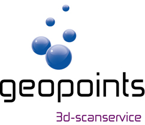
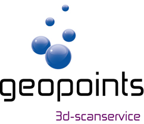